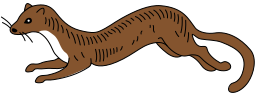

Razdvajanje nalaza
Javni podatak opisuje službeni sloj ili seriju. Pravilo spaja vidljive ulaze i konfigurirani prag. AI objašnjenje samo prepričava zapise koje je aplikacija već citirala.

KunaUSPOREDBA SCENARIJA
Usporedba je ponovljiva iz javnog klimatskog konteksta i odabranih prototipnih pragova.
Pragovi za mraz, sušu i višak vode konfigurirani su u src/app.js. Kombiniraju se s klimatološkim kontekstom, općim regionalnim trendom i potpunosti podataka. Ovo nije prognoza uspjeha usjeva niti preporuka za tretman.
SLJEDEĆIH 14 DANA
Mogući rizici iz javne prognoze i konteksta polja. Svaki je radni podsjetnik, ne dijagnoza.
RADNI ZADACI
PRIVATNI ZAPISI
Zapisi se pohranjuju lokalno u ovom pregledniku. Ne šalju se u javne izvore niti za učenje modela.
PRIRODNA INFRASTRUKTURA
Prijedlozi vežu cilj, kontekst polja i vidljivu ekološku evidenciju; nisu popis popularnih vrsta.
Rubni cvjetni pojas uz južni rub; izbjegava radni pristup.
PROVENIJENCIJA
Kartica nikada ne skriva odakle dolazi podatak, kada je dohvaćen i što se iz njega računa.
Javni podatak opisuje službeni sloj ili seriju. Pravilo spaja vidljive ulaze i konfigurirani prag. AI objašnjenje samo prepričava zapise koje je aplikacija već citirala.
Prognozni adapter još nije povezan. Karte i brojke bez vremenske oznake ne smatraju se opažanjima u stvarnom vremenu.